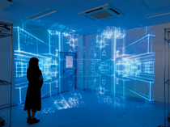

電通大の強み～Ⅰ類～
情報系大学の大学である電気通信大学で"the 情報"をやっているのがこのⅠ類です。映像、音響、触覚などの情報処理に関する最新技術(VRなど)や、経営や社会を評価・分析するために必要なビッグデータの解析、現在多くの分野に活用されている人工知能など、現代の情報社会を支える学問の最先端研究が盛んです。
最適解を求め続けてプログラムが進化するという、当研究所で開発した基板を搭載した民間宇宙機UNITEC-1が、2010年、世界で初めて地球の重力圏外を離脱して宇宙空間を飛んでいます。このような、自律的に働くコンピュータシステムの開発も行われています。このように宇宙空間などだけでなく、睡眠中のデータからその人に最適な健康生活を送るためのサポートシステムを構築するなど、応用範囲は広範囲にわたります。